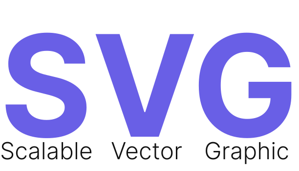

ChelseaJS is a Javascript library for creative, generative Coding.
It's simple and intuitive syntax makes it easy for everyone to get fimiliar with the library and start creating beautiful illustrations and learn and develop in the process.
ChelseaJS is completely free and open source.
ChelseaJS provides you with a wide functionality for drawing and composition.
ChelseaJS is ever evolving and we are always looking for new features and improvements.
ChelseaJS comes with the Power of SVG
Everything you make in ChelseaJS is a SVG. 
- Can be scaled up or down to any extent without losing quality and clarity.
- Better Performance
- Can be modified with CSS
- SVG produces multiple graphical elements which inturn become the part of DOM tree.
Why ChelseaJS?
- Intuitive syntax
- Easy to learn
- Ultra Lightweight ( less than 22KB )
- Amazingly Fast
- No dependencies
- Well documented